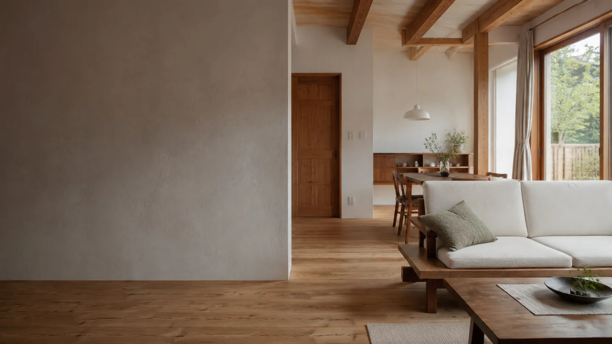
01OUR PHILOSOPHY
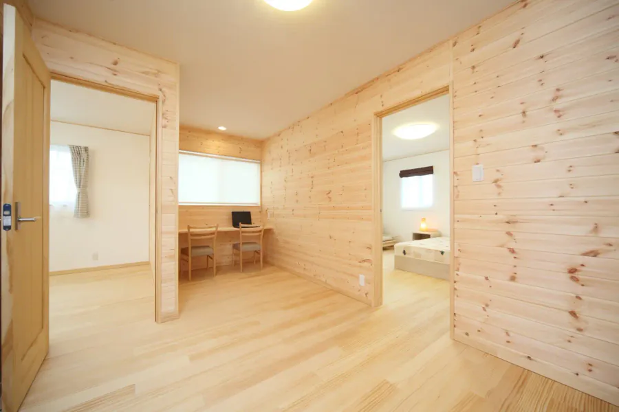
自然素材素材が呼吸する、心地よい室内環境。
OUR PROMISE
自分が住みたくない家は、建てたくない。
食べ物と同じように、住まいの素材も家族の健康に関わります。だから私たちは、毎日触れる床や壁に、無垢材や漆喰などの天然素材を使います。
ただ安い家ではなく、安心して長く暮らせる家を納得できる価格で。無駄な経費を抑え、一棟ずつ正直に家づくりをしています。
- 漆喰SHIKKUI
- 無垢材SOLID WOOD
- 自社大工CRAFTSMANSHIP
02 CHOOSE YOUR HOME
あなたに合う家は、どの家ですか？
平屋・2階建て・自由設計から、ご希望の住まいを探せます。
自由設計の3シリーズを比べる
デザインと省エネ、DIY、自然素材。大切にしたいことからお選びいただけます。 性能・仕様の確認 →
 01 / 03
01 / 03SIMPLYシンプルな意匠 × 省エネ設計
すっきりした外観と、採光・設備を合わせて考える住まい。
- 重視すること：外からの視線と室内の明るさ
- 相談できること：断熱・換気・創エネ設備
 02 / 03
02 / 03Pretty好きな色・素材 × DIY
タイルや無垢材、手づくりの仕上げで、自分らしい空間に。
- 重視すること：素材・色・造作の表情
- 相談できること：DIYの範囲と仕上げ
 03 / 03
03 / 03Healthy自然素材 × 室内環境
無垢材と漆喰を生かし、構造や断熱も一緒に考える住まい。
- 重視すること：素材選びと日々の快適さ
- 相談できること：構造・断熱・建具の仕様
写真は施工・設計イメージです。採用する設備、DIYの範囲、性能、保証、標準・オプションの区分は、商品・プラン別の仕様書と見積書で確認します。
富山県砺波市 / 完成見学会
木と漆喰の家を、体感する。
開催期間延長10月18日（日）まで
開催終了
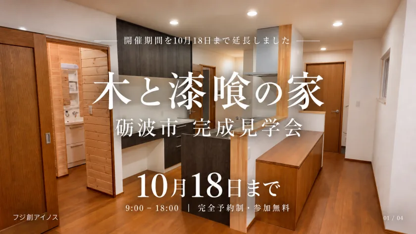
この見学会は終了しました。次回の見学についてはお問い合わせください。
FUJISOU STANDARD
家づくりに、欠かせないこと。
素材だけでも、性能だけでもない。
富山で永く暮らすための、五つの基準です。
- 01
自然素材
毎日触れる床や壁に、無垢材と漆喰を。
- 02
全面漆喰
ビニールクロスに頼らず、塗り壁の特性を生かす。
- 03
耐震等級3
地震への備えを、家づくりの基本に。※建物・計画条件は個別にご説明します。
- 04
断熱・調湿
夏も冬も、過ごしやすい室内環境を目指す。
- 05
富山の工務店
地域の気候と暮らしを知り、完成後も見守る。
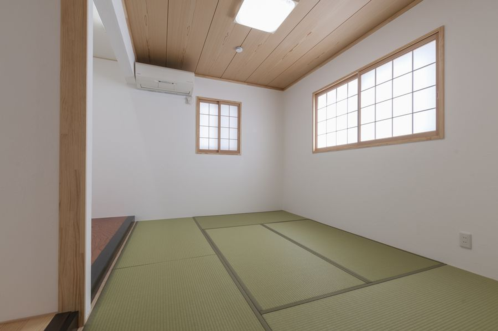
HONEST VALUE
自然素材の家は、高いと思っていませんか？
必要なところには、きちんとお金をかける。余計な経費は、できるだけ抑える。
私たちが目指すのは、安心して長く暮らせる家を、納得できる価格で届けることです。
本体価格と総予算を見る02EXTERIOR WORKS
FUJISOU AINOS GALLERY
実際に建てた家を、ご覧ください。
広さ、素材の質感、収納、間取り。写真から、ご家族の暮らしに近い住まいを見つけてください。
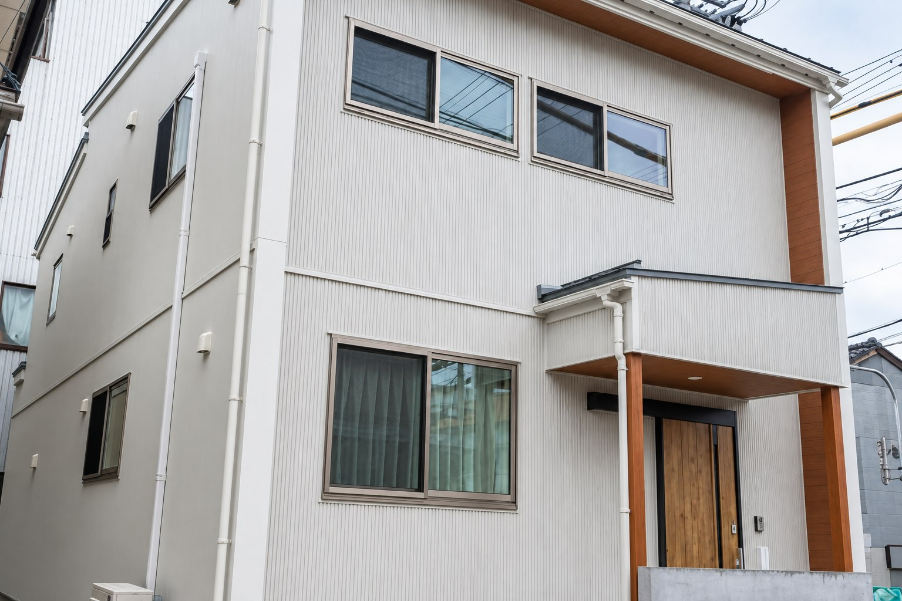
魚津市 / 2階建て 3LDK
雪に強いインナーガレージ付き住宅
VIEW PROJECT →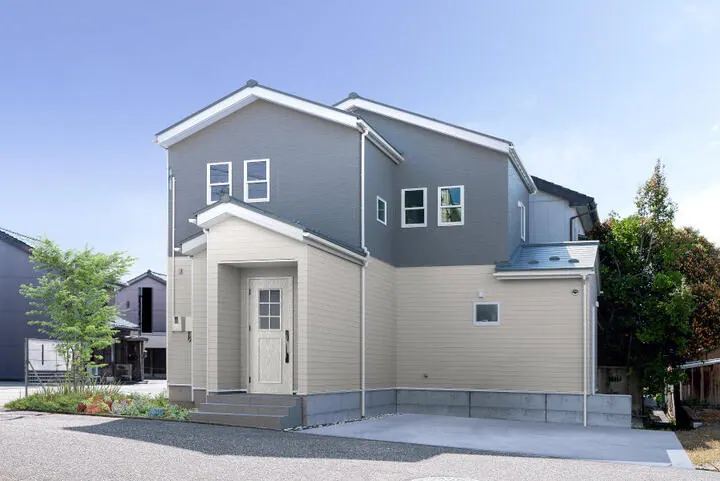
高岡市 / NATURAL HOME
木の香りと暮らす畳コーナーのある家
VIEW PROJECT →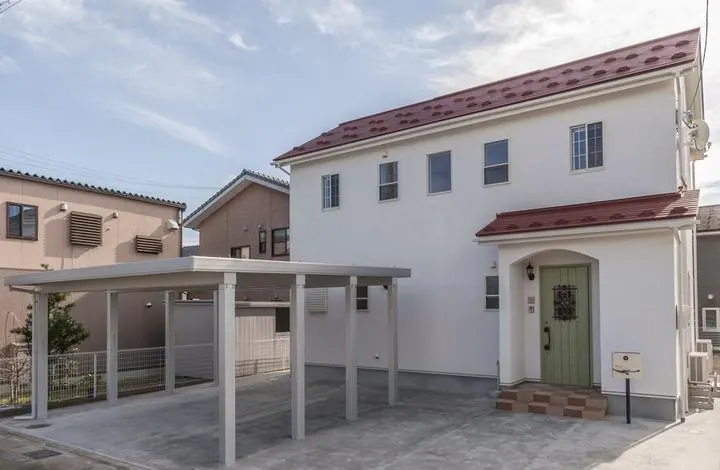
富山市 / SOUTHERN STYLE
南欧風のかわいいおうち
VIEW PROJECT →
南砺市 / SINGLE-STORY
将来の安心と安全を考えた平屋
VIEW PROJECT →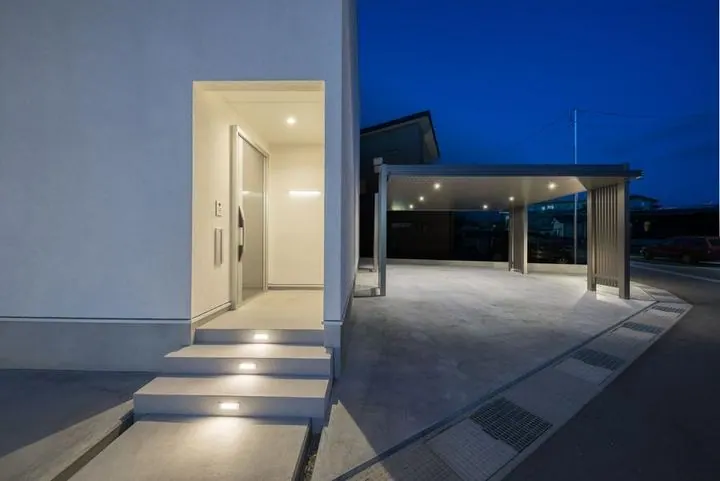
富山市 / NIGHT VIEW
安心と安全を大切に考えた家
VIEW PROJECT →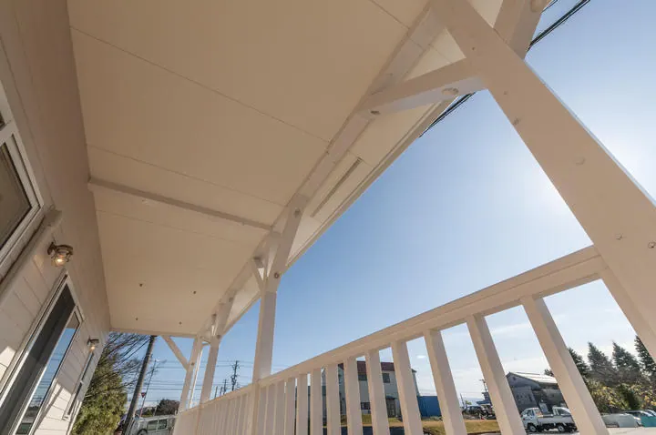
富山市 / BEACH HOUSE
潮風香る町のビーチハウス
VIEW PROJECT →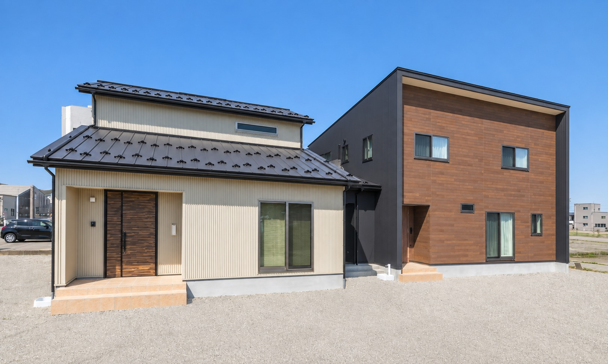
DESIGN INSPIRATION
家族をつなぐかたちに、木のぬくもりを。
渡り廊下がつなぐ、二世帯の住まい。落ち着いたチャコールと木目の表情から、ご家族の暮らしに合う色やかたちを考えてみませんか。
チャコール木目アイボリー
理想の住まいを相談する
 動画を見る
動画を見る 【平屋ルームツアー】黒×木目が映えるモダンな家｜無垢材と漆喰で作る贅沢な注文住宅【フジ創 Ainos】
SHIKKUI WALL
なぜフジ創は、漆喰にこだわるのか。
毎日目にし、空気に触れる壁だから。調湿性や不燃性といった特性に加え、年月を重ねても飽きにくい自然な表情を大切にしています。
漆喰について詳しく見る

05HEALTHY MATERIAL POLICY
SEVEN CHALLENGES
「何を使わないか」まで考える、7つの素材選び。
毎日を過ごす家だから、見える部分も見えない部分も素材を選びます。
- 01集成材を使わない乾燥無垢材の構造
- 02合板フローリングを使わない無垢フローリング
- 03ビニールクロスを使わない漆喰の塗り壁
- 04素材を選ぶ断熱セルロースファイバー
- 05化粧合板建具を使わない無垢材建具
- 06樹脂造作材を使わない無垢造作材
- 07農薬系防蟻剤を使わないホウ酸による防蟻
性能・保証
安心して、長く暮らせる家。
丈夫な構造、快適な室内、完成後の保証。目に見えない部分も、ご契約前に分かりやすくご説明します。
耐震等級3
採用する構造・計算方法・等級の証明は、商品とプランごとに確認します。
断熱と調湿
断熱材・窓・換気を組み合わせ、外皮性能は一棟ごとの計算で確認します。
内容を明確に
使う材料や保証、将来のお手入れまで事前にお伝えします。
保証と点検
お引渡し後も、末永くお付き合いします。
定期点検と保証制度で、大切な住まいを長く見守ります。
保証の対象・初期期間・延長条件は契約時の保証書によります。最長60年の適用範囲や点検・有償工事の条件も、事前に確認します。
家づくりの基本情報
仕様や費用、完成後の保証をご確認いただけます。
MONEY & LAND
家の話より先に、暮らしのお金の話を。
土地と建物を別々に考えず、これからの生活まで含めて順番を整えます。
「いくらかかるか」を先に整理。
土地、建物、付帯工事、外構、諸費用、住宅ローン。総額を見ながら、無理のない計画を考えます。
家づくりの費用を相談する →土地がなくても、始められます。
土地だけを先に決めず、建てたい家と資金計画を合わせて考えることが大切です。
BUILDING JOURNEY
出会いから完成後まで、7つのステップ。
ボタンを選ぶと、その段階で何を決めるのかを確認できます。
話
まずは気軽にご相談
希望の暮らし、予算、土地の有無、不安に感じていることを伺います。
無料相談JOURNAL & EVENTS
見て、知って、家づくりを確かめる。
実際の家を体感できる見学会と、土地・住宅ローン・住まいに役立つ記事をご案内します。


初めての方へ：こんなことから相談できます
土地や予算が決まっていなくても、ご相談いただけます。
- 土地探しや住宅ローンについて知りたい
- 平屋と2階建てで迷っている
- 他社と比較しながら考えたい
- まだ建てるか決めていない
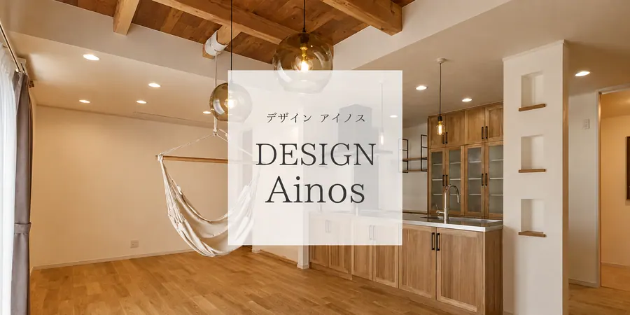
LOCAL BUILDER IN TOYAMA
富山の家族に、富山の家を。
フジ創アイノスは、高岡市の本社・ショールームと富山市の事務所を拠点に、高岡市・砺波市・富山市・射水市・南砺市などで注文住宅を手がけています。自然素材の平屋、2階建て、土地探し、住宅ローン、リフォームまで、地域の身近な相談相手として家づくりを支えます。
- TAKAOKA HEAD OFFICE / SHOWROOM
- 〒933-0062 富山県高岡市江尻846-1
- TOYAMA OFFICE
- 〒939-8006 富山県富山市山室256-4 SKビル 2-A
- OPEN
- 9:00–18:00 / 水曜・木曜定休
- CONTACT
- 0800-200-2661
CONTACT
家づくりのこと、まずは話してみませんか？
土地も予算も、まだ決まっていなくて大丈夫です。
「何から始めればいい？」からお聞かせください。
お電話で相談0800-200-2661受付 9:00–18:00
水曜・木曜定休電話をかける メールで相談info@ainos.bizご質問やご相談をいつでもお送りくださいメールを送る
水曜・木曜定休電話をかける メールで相談info@ainos.bizご質問やご相談をいつでもお送りくださいメールを送る
LINEで相談友だち追加QRコードを読み取るか、ボタンから追加できますLINEで友だち追加
しつこい営業はいたしません。ご相談だけでも安心してお問い合わせください。